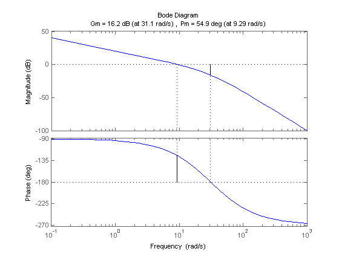
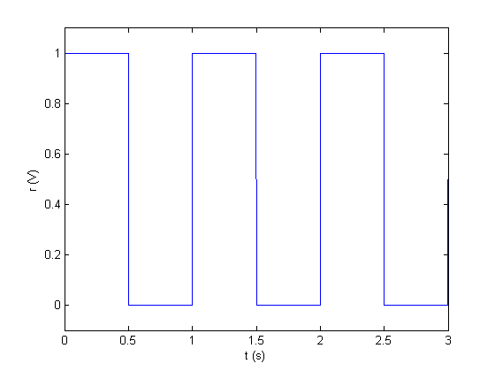
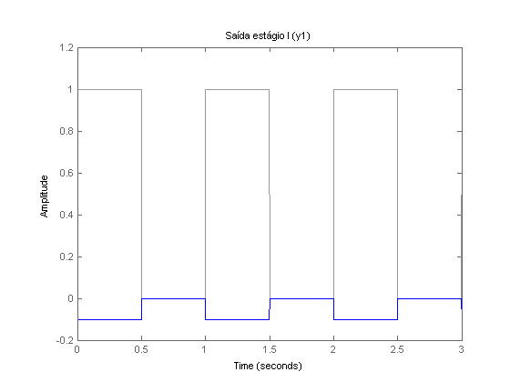
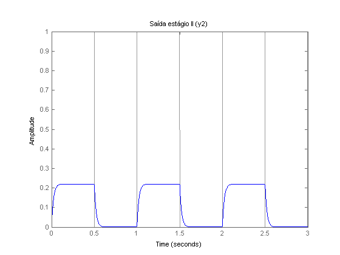
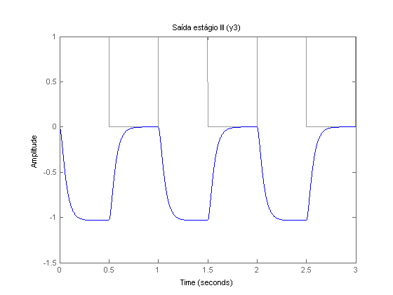
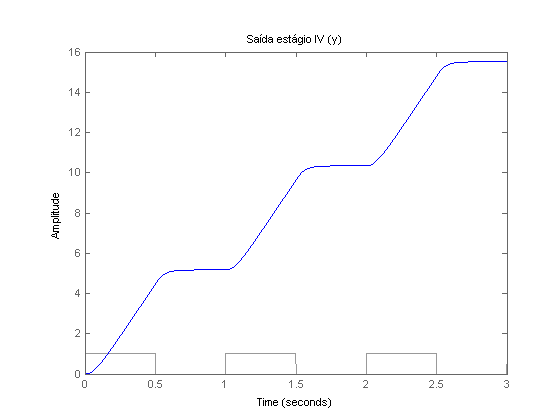

Lab 2 - Pré Relatório
Intro
Contents
Valores dos resistores
z1 = 100e3; z2 = 10e3; z3 = 100e3; z4 = 220e3; z5 = 100e3; z6 = 470e3; z7 = 1e6; c1 = 0.1e-6; c2 = 0.1e-6; c3 = 0.1e-6;
Funções de transferência de cada estágio
As equaçes foram obtidas pelo circuito já transformado para a frequência por Laplace
s = tf('s');
G1 = tf(-z2/z1)
G2 = -z4/(z3*(z4*c1*s+1))
G3 = -z6/(z5*(z6*c2*s+1))
G4 = -1/(z7*c3*s)
G1 =
-0.1
Static gain.
G2 =
-220000
---------------
2200 s + 100000
Continuous-time transfer function.
G3 =
-470000
---------------
4700 s + 100000
Continuous-time transfer function.
G4 =
-1
-----
0.1 s
Continuous-time transfer function.
Função de trasferência completa
G = minreal(G1*G2*G3*G4)
G =
1e04
-------------------------
s^3 + 66.73 s^2 + 967.1 s
Continuous-time transfer function.
Diagrama de bode
Incluindo margens de fase e ganho do sistema
margin(G);

Entrada
Uma onda quadrada de 1 Hz e amplitude 1 (volt)
t = 0:.0001:3; r = square(2*pi*t)*0.5+0.5; plot(t,r); axis([0 3 -0.1 1.1]); xlabel('t (s)'); ylabel('r (V)');

Saída dos estágios
lsim(G1,r,t), title('Saída estágio I (y1)'), snapnow; lsim(G1*G2,r,t), title('Saída estágio II (y2)'), snapnow; lsim(G1*G2*G3,r,t), title('Saída estágio III (y3)'), snapnow; lsim(G,r,t), title('Saída estágio IV (y)');



